ACADEMIC QUALIFICATION
B.Sc. Psychology
University of Ibadan
Salau BukolaData AnalystLagos, Nigeria
I analyse business data using Excel, SQL, Power BI and Python to improve data quality, track performance, uncover trends and turn findings into actionable insights.
CV not yet available. Add your PDF at assets/cv/Salau-Bukola-CV.pdf, then link this button to that file.

A LITTLE ABOUT MY APPROACH
I’m a data analyst based in Lagos, Nigeria, interested in the stories and decisions hidden inside everyday business data. I work across the analysis process, from cleaning and exploring data to building useful visualisations and reports.
My approach is practical and curious: understand the business question, check the quality of the data, then communicate findings in a way people can use. I’m focused on helping organisations make more informed decisions with evidence.
EDUCATION, CERTIFICATIONS & TRAINING
ACADEMIC QUALIFICATION
University of Ibadan
PROFESSIONAL CERTIFICATION
Google / Coursera
PROFESSIONAL TRAINING
Tech Studio Academy
INTERNSHIP
Excelerate
INTERNSHIP PROJECT
Easy Technologies project work featuring an interactive Excel dashboard and a supporting presentation.
View internship projectTOOLS & TECHNIQUES
The right tool depends on the question. Here are the tools and techniques I use to move from raw data to a clearer picture.
Data organisation, cleaning, analysis and reporting
Querying, filtering and combining relational data
Interactive data visualisation and reporting
Exploration and analysis with familiar data libraries
Data cleaning, analysis, visualisation and reporting
04 / PROJECTS
Business questions, analytical methods and documented findings from project work across several domains.
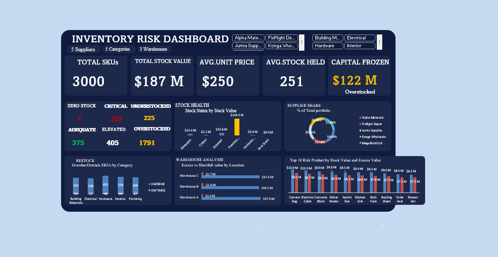
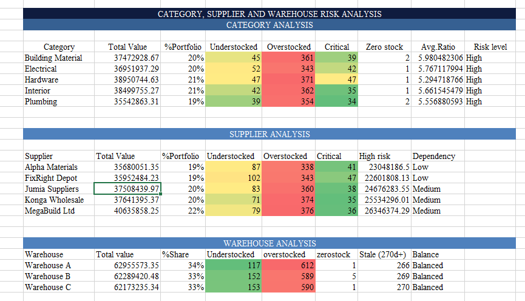
Business question Where is inventory overstocked, understocked or exposed to supply risk?
Data & approachExcel and Power Query analysis of stock levels, excess value, supplier dependency and warehouse distribution.
Documented findingApproximately $122M is tied up in overstock; the README also reports overstock and understock across product categories and warehouses.
Business implicationReview demand-based purchasing, supplier practices and stock balance by category and warehouse.
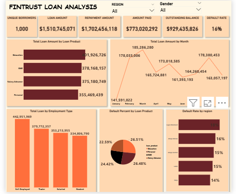
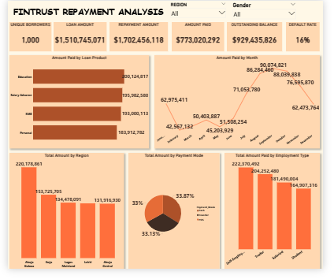
Business question How do loan disbursement, repayments and defaults vary across borrower groups and regions?
Data & approachJoined customer, loan and payment data with SQL transformations and KPI calculations, then explored results in Power BI.
Documented findingsThe README reports 45% repayment performance and a $929M outstanding balance.
Business implicationReview repayment performance across borrower segments and regions, and investigate the outstanding balance and repayment gaps.
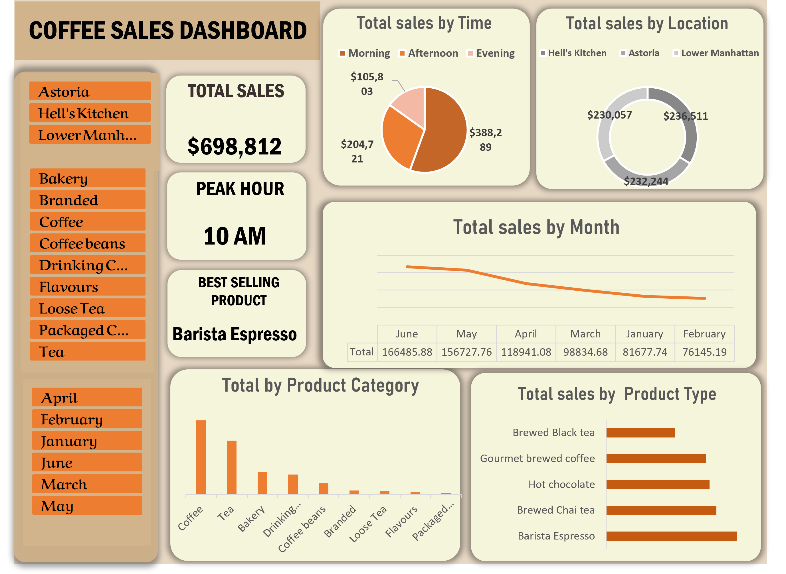
Business question Which times, locations and products contribute most to shop sales?
Data & approachCleaned sales data from three New York City locations, added calculated fields, and used PivotTables, charts and slicers.
Documented findings10 AM is the peak sales hour, morning sales lead, and Barista Espresso is the best-selling product.
Business implicationUse the morning peak and leading products to guide staffing, replenishment and follow-up promotional tests.
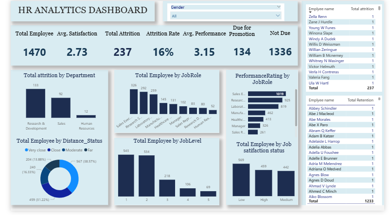
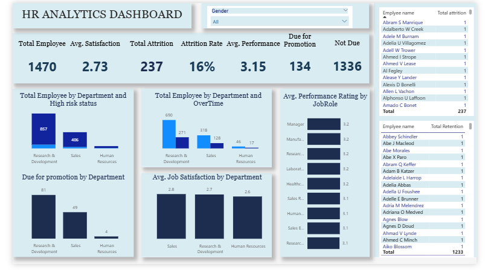
Business question What workforce patterns can inform retention, workload and promotion planning?
Data & approachPower BI analysis of the IBM HR dataset using Power Query transformations and DAX measures to explore workforce composition, attrition, satisfaction, overtime and promotion readiness.
Documented findingsThe README highlights Sales and Research & Development for attrition and overtime. Its attrition totals conflict, so no total is quoted here.
Business implicationUse department-level overtime and satisfaction patterns to focus further retention and workload review.
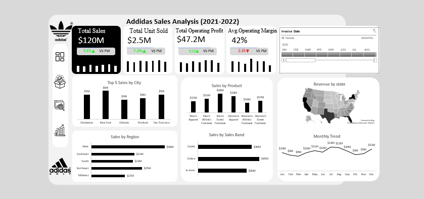
Business question Which products, regions and sales channels drive performance?
Data & approachCleaned and modeled Adidas US transaction data, built a date table and PivotTable summaries, then assembled an executive dashboard.
README-reported findingsOnline is the leading channel, the West leads by region, and Men's Street is the top product.
Business implicationUse the reported channel, region and product patterns to guide deeper performance review.
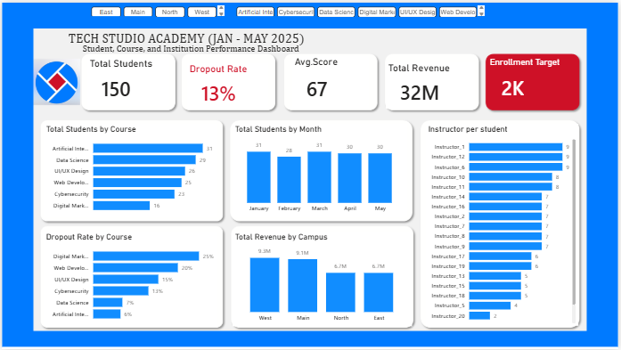
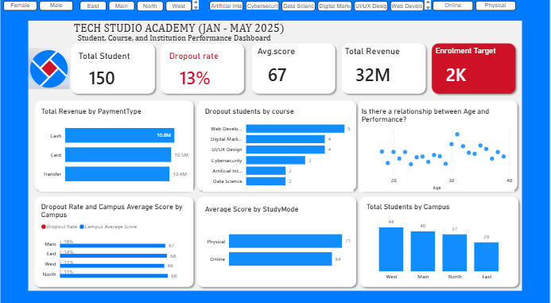
Business question How does institute performance compare across enrollment, learning and revenue?
Data & approachPower BI analysis combining student, finance, instructor, performance and target datasets.
README-reported findingsEnrollment is reported below target, with differences across courses, campuses and study modes.
Business implicationUse the target gap and course or campus comparisons to direct follow-up performance reviews.
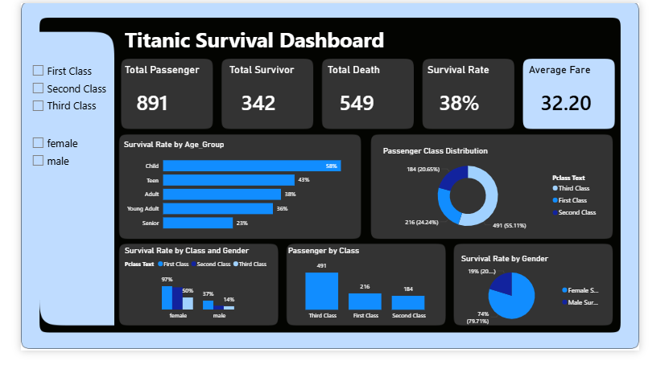
Business question Which passenger characteristics were associated with survival?
Data & approachThree-stage workflow: clean and engineer features in Python, explore results in Power BI, and document insights.
README-reported findingsReported survival rates differ by gender and passenger class.
Analytical implicationTreat group differences as descriptive associations, not evidence of cause and effect.
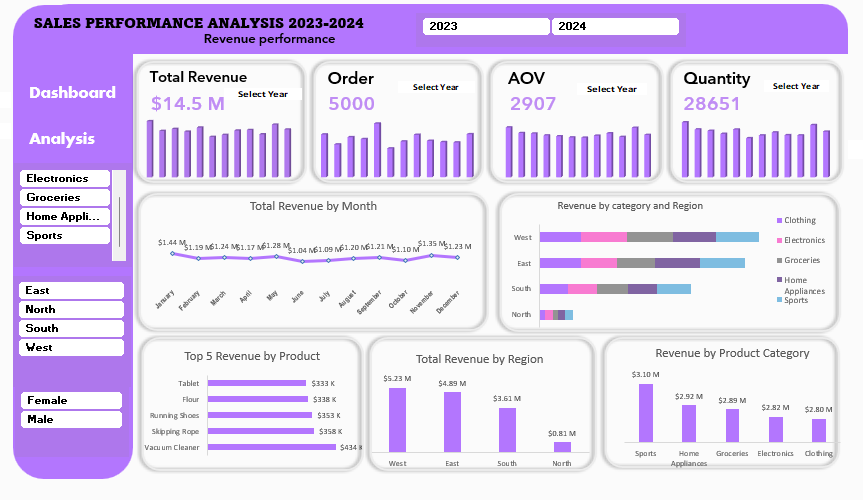
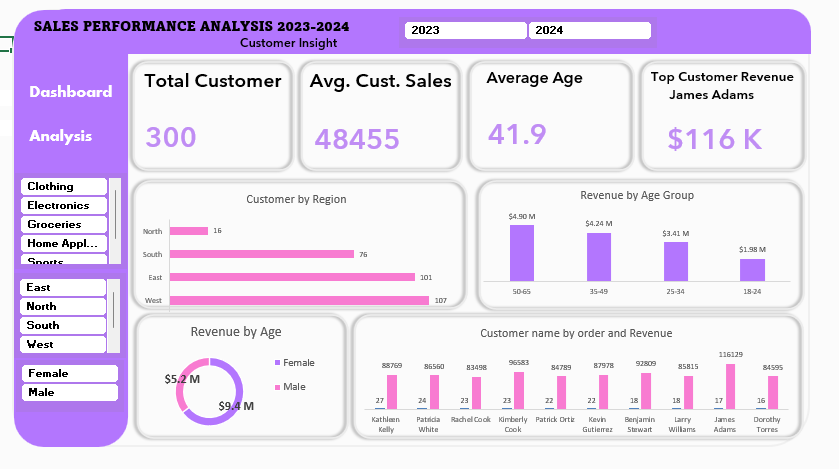
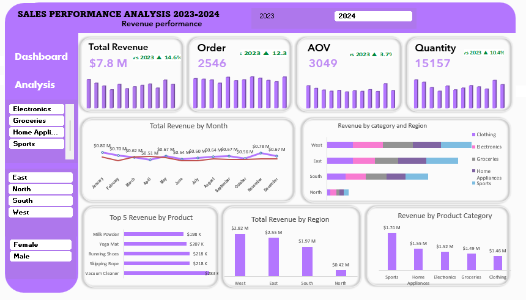
Business question How can managers explore sales, customer and product performance in one place?
Data & approachInteractive 2023–2024 Excel dashboard using PivotTables, calculations and slicers, with a supporting presentation.
README-reported findingsSales peaks are reported in January, May and November, with Sports the leading product category.
Business implicationUse monthly peaks and category performance to guide follow-up forecasting and merchandising analysis.
Dashboard previews open as screenshots; no live interactive dashboards are linked. Findings are reported by the project READMEs and have not been independently recalculated.
HAVE A QUESTION OR OPPORTUNITY?
I’m open to conversations about data, analytics opportunities and meaningful business questions.
Contact MeBASED IN LAGOS, NIGERIA